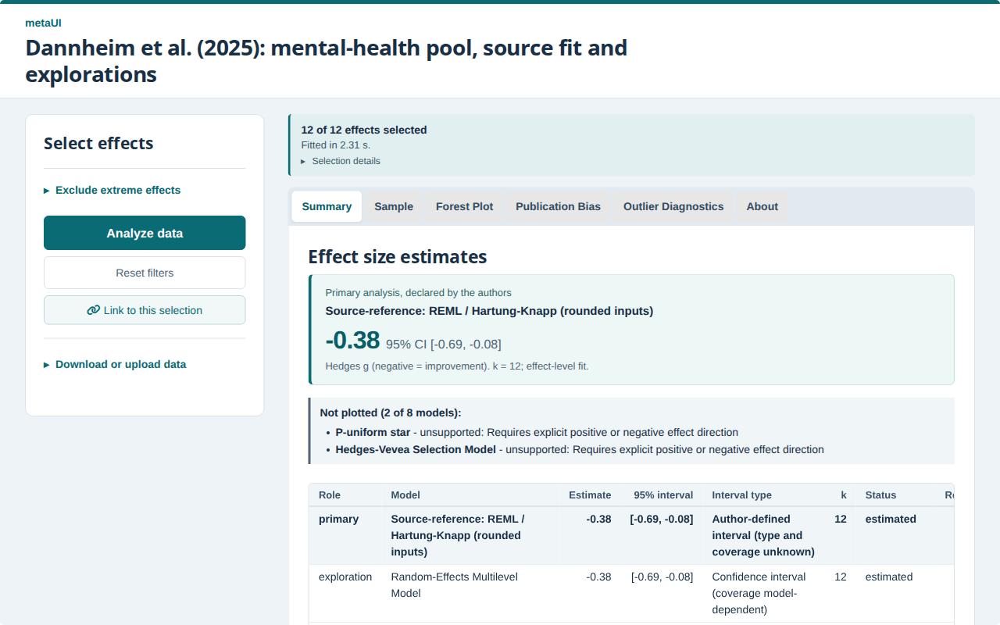
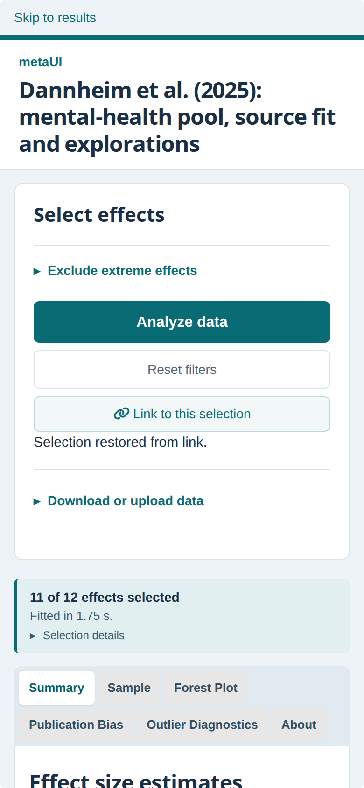

Can metaUI apps run without a server?
Feasibility of static, browser-only metaUI apps with shinylive (WebAssembly R). Exploration on branch explore/shinylive-static-apps, from main at 82168af (metaUI 0.2.0). 30 October 2026.
Verdict: feasible, with a real cost in loading time. The Dannheim example app runs entirely in the browser after a plain static-file export. Every model, filter, plot, download, workbook upload, selection link and the opt-in Bayesian model worked in Chromium once a 49-line bridge script was added. Results match the server app: the source-reference model gives g = −0.38356080, 95% CI [−0.68781519, −0.07930642], identical to eight decimals, and no model differs by more than 1.1 × 10−11.
The price is paid by every reader on every visit: about 136 MB of downloads and about 20–24 s until the app can be used, with first results about 2 s later (measured without browser automation on a 2017 quad-core laptop CPU). Analyses take roughly 2–5 times as long as on a server (2.4–3.3 s rather than 1.3 s for the eight default rows; 21 s rather than 4.7 s for the Bayesian fit, measured under automation).
Startup measured through Playwright is about twice as long (around 41 s), because an attached DevTools session makes every caught JavaScript exception expensive and webR throws thousands of them while loading package code. Section 6 explains this and what limits further speed-ups.
I recommend offering static export as an opt-in, archival route (export_static(), prototyped on this branch) next to server hosting, not as a replacement. It does address the MetaLab problem: a static bundle keeps working without anyone maintaining a server, and it freezes the exact R and package versions.
Decisions needed from you
- Pursue it as a feature? I recommend an opt-in
export_static()step for 0.3 and the RSM Software Focus article, presented with the loading cost stated plainly. Alternative: keep it as documentation only (“you can run shinylive yourself”), which avoids maintenance but leaves selection links and downloads broken. - API shape. I prototyped a separate step,
export_static(app_dir, dest_dir), rather thangenerate_shiny(static = TRUE), so that authors edit the generated app and then re-export it. Confirm, or ask for a flag as well. - A 2× faster start needs results shown before R has loaded. Without automation, first results take about 22–24 s, and a Shiny app with only the core meta-analysis packages already needs 15–20 s, so trimming the app cannot halve the time (section 6). The remaining option is to compute the default full-data results at export time with the same app code and show them at once, labelled as such, while the interactive version loads. Decide whether that is acceptable for a reproducibility tool; I would label it clearly and keep it optional.
- Changes from the speed work. Replacing
shinyWidgetswith Shiny’sselectizeInputand loading optional packages lazily (brancht3/shrink-generated-app-startup-loads) keeps every result identical but gives no measurable gain for real readers, so I would not merge it for speed alone.metacannot be replaced bymetaforfor trim-and-fill without changing results (211 of 324 test datasets differed). - Licence obligations before any public deposit. The bundle redistributes R (GPL), webR binaries (GPL-3) and 128 R packages.
export_static()now writes a notice and a package/licence table. Six packages are webR-patched builds whose source location I could not confirm (shiny, httpuv, later, sass, nloptr, vroom). Decide whether to bundle their sources, link the r-wasm project, or ask the webR maintainers. - A manual check I cannot do here: please open the private preview (link below) in Safari and Firefox on your Mac and on a phone. Playwright’s Firefox build failed even on a minimal shinylive app, and WebKit could not run on the box.
- Public demo. Nothing has been published. A GitHub Pages demo needs your approval. Note that GitHub Pages has a soft bandwidth limit of 100 GB per month (GitHub docs), which is roughly 700 visits at 136 MB each.
Private preview (tailnet only)
- Dannheim app, default models: https://box.tail8f7293.ts.net:8446/site/dannheim/
- Same app with the opt-in Bayesian model: https://box.tail8f7293.ts.net:8446/site/dannheim-bayes/
- This report: https://box.tail8f7293.ts.net:8446/report.html
Served by a plain Python file server (work/shinylive/serve.py) behind tailscale serve on port 8446; no R process is involved. Expect a blank page for about 20–25 seconds while R loads.
1. The package and its alternatives
shinylive is the right package. The R package shinylive (0.5.0 on CRAN, MIT) exports a Shiny for R app folder into static files that run R through webR. The export used shinylive web assets 0.10.12, which ship webR 0.6.0 with R 4.6.0. The generated app does not need metaUI at runtime, so metaUI itself never has to be compiled for WebAssembly.
| Route | Server needed? | Fit for metaUI |
|---|---|---|
| shinylive export (tested here) | No, static HTTPS host or localhost | Runs the generated app unchanged, apart from the bridge script. |
| Quarto shinylive extension | No | The same technology embedded in a Quarto page, with the same loading cost. Useful for a companion article page, not a separate option. |
| webR directly with a custom JavaScript interface | No | Would mean rewriting the interface; R-side loading costs stay the same. |
| Precomputed results in static HTML (htmlwidgets, crosstalk) | No | Fast, but only workable if the filter space can be enumerated; uploads and refitting are lost. |
| Hosted Shiny (shinyapps.io, Posit Connect Cloud, Hugging Face Spaces, Binder) | Yes, someone else’s | Fast and unchanged, but depends on a provider and its free tier: the MetaLab risk in a different form. |
2. Dependency availability in webR
Nothing is missing. All 29 direct dependencies (the 28 Imports plus the optional bayesmeta) and all 127 recursive dependencies have WebAssembly binaries for R 4.6 on repo.r-wasm.org, so no substitutions or dropped features are required. Three versions differ from current CRAN: readxl 1.5.0.1 (CRAN 1.6.0), zcurve 2.4.6 (2.4.7) and a webR-patched shiny 1.13.0.8000 (1.14.0). None changed results in this app. Full table: evidence/webr-dependency-availability.csv.
The export bundles 92 packages (94 MB) next to the app. Another 36 packages, including shiny, bslib and httpuv, come preinstalled in shinylive’s webR library.
3. Prototype results
Measured numbers
Headless Chromium 154 on the box (Intel i5-7600T, 4 cores, 2017), served from localhost; network time is therefore close to zero, and a reader’s connection adds to the startup figures. Server figures are the same app under shiny::runApp() on the same machine. Startup rows come from plain headless Chromium without automation (real-timing.sh); other static rows were measured under Playwright and may be somewhat inflated.
| Measure | Static (shinylive) | Server |
|---|---|---|
Export time (shinylive::export, packages cached) | ≈ 60 s | – |
| Bundle on disk (two apps sharing assets) | 157 MB | 244 kB app folder |
| Downloaded per visit | 136 MB | < 2 MB |
| Page opened → ready to analyse (6 runs without automation, load average 2–5) | 19.4–24.2 s | 0.9 s |
| Page opened → first results, Analyze clicked when ready (same runs) | 21.7–27.0 s | 2.2 s |
| First analysis, 8 default rows | 2.4–3.3 s | 1.3 s |
| Re-analysis after a z-score filter change | 2.5–2.6 s | 1.7 s |
| Forest plot render | 2.4 s | 0.4 s |
| Forest PDF / PNG / CSV export | 0.7 / 0.6 / 0.1 s | 0.2 / 0.2 / 0.04 s |
| Workbook download / upload round trip | 0.4 / 2.4 s | 0.3 / 1.0 s |
| Bayesian app: first analysis (9 rows) | 24.2 s | 6.5 s |
| Bayesian fit alone (12 studies) | 21.3 s | 4.7 s |
| Bayesian app: workbook download (adds two prior-sensitivity fits) | 43.7 s | 10.0 s |
| Peak memory, largest browser process (Bayesian app) | 879 MB | – |
Where the startup time goes
Timestamps from an instrumented copy of the app, reported back to the server log rather than read through DevTools, from a run with first results at 25 s (load average 3.4):
| Phase | Elapsed |
|---|---|
| Page, service worker, webR runtime (R.wasm, base library) and R startup | 0 → 4.1 s |
| shinylive downloads and mounts the 92 package images, one after another | 4.1 → 9.9 s |
| Base-library images, Shiny starts, app begins | 9.9 → 12.6 s |
global.R loads 28 package namespaces | 12.6 → 20.9 s |
| Sourcing the app’s R files, then interface rendered and connected | 20.9 → 23.0 s |
| First analysis | 23.0 → 25.1 s |
The slowest namespaces were Matrix 2.1 s, meta 1.5 s, lme4 1.1 s, vroom 1.0 s and plotly 0.5 s; everything else took under 0.4 s. On localhost the mount phase is limited by processing, not downloading: fetching all package images in parallel while webR boots (they all arrived by 1.5 s and the later mounts made no requests) did not shorten startup. Over a real connection, parallel fetching would hide part of the 136 MB download.
Repeat visits are not faster. In the automated tests the browser re-downloaded the full 136 MB on a second visit (117 of 119 requests returned full content although the server sent caching headers). shinylive ships with its own cache storage disabled.
What works and what broke
| Feature | Result | Notes |
|---|---|---|
| All model rows, primary-model panel, status and warning texts | Works | Identical to the server; see parity below. |
| Z-score filter, reset, “filters changed” notice | Works | Dannheim has no moderator filters, so categorical and numeric moderator filters were not exercised. |
| Sample, Forest, Publication Bias, Outlier Diagnostics and About tabs | Works | Plotly violin and DT tables render; no JavaScript or Shiny output errors beyond the expected “P-curve/z-curve not estimated” messages, which the server shows too. |
| Workbook download and upload round trip | Works | Upload restored 12 of 12 rows with the saved filters. |
| Forest PDF, PNG and CSV exports | Fixed by bridge | Download handlers always produced correct files, but in both automated Chromium environments a click sent the request past shinylive’s service worker to the static server, which returned 404. The bridge fetches the file through the service worker and saves it locally, which worked in headless Chromium and in the T3 browser. |
Selection links (?metaui=1&selection=…) | Fixed by bridge | shinylive starts the app in an iframe without the page’s query string, so links neither restored nor updated the address bar. The bridge copies the query into the iframe before Shiny connects, mirrors updates back to the page and points “Link to this selection” at the page. A link then restored the slider to [−1.5, 1] and reanalysed (11 of 12 effects; g = −0.30). |
| Opt-in Bayesian model and prior sensitivity | Works | Identical estimates; about 4.5 times slower. |
| Offline use | Works | Startup and analysis succeeded with every non-localhost DNS lookup blocked: the bundle is self-contained. |
| Mobile-width layout | Works (emulated) | A 390 px viewport in desktop Chromium; phone CPU and memory not tested. |
| Package versions on the About tab | Misleading | The tab lists the authoring computer’s versions, not those running in the browser (e.g. readxl 1.6.0 vs 1.5.0.1). For now the export’s notice points to bundled-packages.csv; a later version should rewrite the table. |
| Firefox, Safari | Unverified | Playwright’s Firefox 150 reached the end of global.R but never displayed the app; a minimal shinylive hello-world app failed in the same way, so the cause is probably the test harness rather than metaUI. WebKit lacked system libraries on the box. |


Numerical parity with the server app
I compared the workbook summary sheets downloaded from the server app and the static app after the same full-data analysis (script: work/shinylive/compare-workbooks.R). Model names, statuses and warnings were identical.
| Model | Estimate (both) | Largest |difference| in estimate or CI |
|---|---|---|
| Source-reference: REML / Hartung–Knapp (primary) | −0.38356080 | 0 |
| Random-effects multilevel model | −0.38356079 | 1.1 × 10−11 |
| Robust variance estimation | −0.38286908 | 0 |
| Trim-and-fill | −0.38300043 | 0 |
| PET | 0.05177925 | 4.9 × 10−17 |
| PEESE | −0.21038191 | 1.1 × 10−16 |
| Bayesian normal-normal model | −0.38263021 | 0 |
The primary row reproduces the reference exactly: g = −0.38356080, 95% CI [−0.68781519, −0.07930642]. The three Bayesian prior-sensitivity rows were identical, and the forest-plot CSV differed only in the 16th significant digit of one RVE interval bound.
4. Recommended design
export_static() as a separate step (prototyped)
metaUI::generate_shiny(data, "My meta-analysis", save_to_folder = "my-app", launch_app = FALSE)
# authors edit my-app/ as usual, then:
metaUI::export_static("my-app", "my-app-static")
httpuv::runStaticServer("my-app-static") # local preview; any HTTPS host works
The prototype in R/export_static.R leaves the app folder untouched. It copies the app to a temporary folder, appends the bridge (inst/template_code/metaui-static.js) to the copy’s www/metaui.js and calls shinylive::export(wasm_packages = TRUE). It then writes STATIC-NOTICE.md (hosting requirements, data notice, bundled software) and bundled-packages.csv (128 packages with version, licence, location and source link). shinylive is a Suggests dependency. Because authors re-export after editing, author edits flow through unchanged; the bridge does nothing when an app runs on a Shiny server.
Tests: unit tests for the licence table and notice run by default. An end-to-end export of a fixture app runs when METAUI_TEST_SHINYLIVE=1, because it downloads about 100 MB of WebAssembly packages; it passed. The full suite passes (62 tests, 1,194 expectations, no failures; only the opt-in export test skipped). The preview apps were rebuilt with export_static() itself and passed the complete browser test again (all downloads, the upload round trip and selection-link restore working; primary model identical).
Still to do if you go ahead
- Add a
staticoutput to the JSONbuild_app()path; write the actual runtime versions into the About tab; add a short loading message, since readers otherwise see a blank page for 20–25 s. - If you accept it, show precomputed default results while R loads (decision above); otherwise mount only the packages needed for the first results, which would save part of the 6 s mount phase.
- In static exports with the Bayesian model, warn about the roughly 20 s fits, or lower the default study cap.
- Add a static-export case to the CI browser smoke test (Chromium only, unless real Firefox works).
- Resolve source availability for the six webR-patched packages before any public deposit.
Hosting and archiving
Service workers need HTTPS or localhost, so opening index.html from disk does not work. GitHub Pages, Netlify, Cloudflare Pages and university web space all qualify. OSF, Zenodo and journal supplement systems store files, but as far as I know none of them serves a folder as a website. For those, the realistic pattern is a live copy on a static host plus the same bundle as a zip archive (about 157 MB for the two preview apps, 142 MB as a compressed archive, because the package images are already compressed) with a DOI, which readers can run locally with one command. Because the bundle pins R 4.6.0 and every package binary, an archived copy reproduces the published results without later package updates changing them; a server app does not guarantee that.
5. Limits
- Loading time. About 22–24 s to first results on a 2017 laptop CPU with an instant connection. On slower connections the 136 MB download adds roughly 22 s at 50 Mbit/s and nearly 2 minutes at 10 Mbit/s (my calculation, not measured). Newer laptops will be faster; older phones are likely to be slower.
- Computation. Default rows are fast enough (≈ 3 s). Bayesian fits and anything bootstrapped are 4–5 times slower than on a server and block the app while running.
- Memory. The browser process running R peaked at 879 MB with the Bayesian app. That is fine on laptops but may be tight on older phones; untested on real devices.
- Privacy. The full dataset (here
dataset.rdsinsideapp.json) and all R code are sent to every visitor. That is acceptable for published data, but must be stated, as the notice does. Uploaded workbooks stay on the reader’s device, which is a privacy gain over a server. - Offline. Works once the bundle is local, as tested. Readers still need to start a local web server to use it.
- Ongoing compatibility. An archived bundle keeps working as long as browsers run its WebAssembly. Any future re-export depends on repo.r-wasm.org binaries being available for the current R version.
6. Speed work: can startup be halved?
Not by trimming the app. Three GPT-6.1 Sol subagents worked in parallel on separate branches, each checked against the full browser test and the server workbook.
| Workstream | Result | Branch |
|---|---|---|
A: load less at startup (checks that do not load packages, selectizeInput instead of shinyWidgets, base R instead of stringr, optional packages loaded on use) | Results identical (max difference 1.1 × 10−11), all 1,226 expectations pass. 1.10× faster under automation, but no gain for real readers: median first results 24.8 s against 24.4 s without automation. | t3/shrink-generated-app-startup-loads |
B: replace meta with metafor in generated apps | Not equivalent. Across 324 datasets, direct trim-and-fill differed on 211 (estimate by up to 4.2, imputed studies by up to 27); rebuilding meta’s procedure in metafor matched ordinary cases to 2 × 10−14 but not edge cases. Nothing changed. | t3/avoid-meta-app-loading |
| C: webR and shinylive loading | Found that package loading under automation was dominated by symbol relocation (about 20 s). A patch that turns off stack-trace capture during relocation made no difference (20.1 vs 20.2 s). | t3/optimize-shinylive-startup |
The relocation cost turned out to be a measurement artefact. webR checks each exported WebAssembly global by assigning to it and catching the resulting error, thousands of times for packages such as stringi and sass. With Playwright’s DevTools session attached, relocation across 57 modules took 20 s; in plain headless Chromium the same instrumented build reported 0.03 s. Startup figures measured under automation, and the apparent gains from dropping stringi and sass, are therefore inflated about twofold. Real-reader timing now uses work/shinylive/real-timing.sh, which runs Chromium without automation and reads times back from the server log.
The floor explains why trimming cannot halve startup. Without automation, a static app containing only Shiny was ready in 5.6 s at load average 2.7 (9.5–11.4 s at load 5–10); one that also loads metafor, meta, ggplot2, dplyr, robumeta and DT took 18.4–20.8 s at load 7–11. The full app’s 22–24 s is close to that, and the first results need those packages. Mounting only what the first results need would skip 42 of 96 package images (32 MB) and save part of the 6 s mount phase, perhaps 10–20% overall (estimated, not measured). Halving the time to first results would require showing precomputed default results while R loads.
7. Reproduction and files
R/export_static.R,inst/template_code/metaui-static.js,tests/testthat/test-export-static.R: prototype, bridge and tests.work/shinylive/static-smoke.cjs: Playwright test of one app as static export or server (timings, downloads, upload, selection link).startup.cjs: cold/warm startup timing.serve.py: static server with request timing.real-timing.sh: startup timing in Chromium without automation (use this for reader-facing numbers);timed-run.sh: the same under Playwright, serialised with a machine-wide lock.compare-workbooks.R: server/static parity.work/shinylive/evidence/: run results (JSON), workbooks from both modes, screenshots, dependency and licence tables, package load times.- The exported site (
work/shinylive/site/, 157 MB) is not committed; rebuild it withexport_static().
Environment side effects: shinylive and archive were installed into /home/lukas/R/library. One install accidentally replaced metaUI there with this branch, and I reinstalled metaUI from main 82168af immediately afterwards. Installing Firefox and WebKit for the cross-browser check made Playwright delete cached browsers it did not recognise (chromium-1248, its headless shell and ffmpeg-1013 in ~/.cache/ms-playwright); I reinstalled exactly those revisions (Playwright 1.64.1) and removed the Firefox and WebKit downloads. Exports and tests used a separate scratch library under /tmp/shinylive-explore/lib with current package versions, because shinylive refused to export from the older system library.